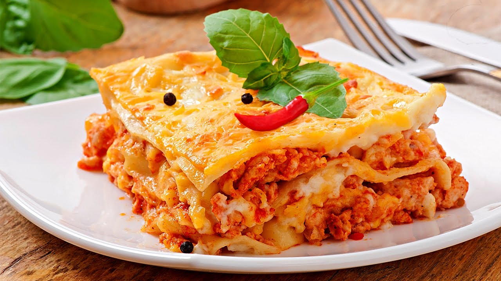

Lasagna

Lasagna is a wide, flat sheet of pasta. Lasagna can refer to either the type of noodle or to the typical lasagna dish which is a dish made with several layers of lasagna sheets with sauce and other ingredients, such as meats and cheese, in between the lasagna noodles.
Originally, the word lasagna was used to describe a pot in which food was being cooked rather than the pasta itself. Lasagna recipes have been around for ages, dating back to as early as the thirteenth century. Today, lasagnas come in all kinds of varieties from veggies and cream sauces to traditional sauce and cheese lasagnas as well as meat lasagnas.
Originated in Italy during the middle ages, lasagna has been attributed to the city of Naples.
Ingredients
- 9 lasagna noodles
- 1-1/4 pounds bulg Italian Sausage
- 3/4 pound ground beef
- 1 medium onion, diced
- 3 garlic cloves, minced
- 2 cans crushed tomatoes
- 2 cans tomato paste
- 2/3 cup water
Steps
- Cook noodles according to package directions; drain. Meanwhile, in a Dutch oven, cook sausage, beef and onion over medium heat 8-10 minutes or until meat is no longer pink, breaking up meat into crumbles. Add garlic; cook 1 minute. Drain.
- Stir in tomatoes, tomato paste, water, sugar, 3 tablespoons parsley, basil, fennel, 1/2 teaspoon salt and pepper; bring to a boil. Reduce heat; simmer, uncovered, 30 minutes, stirring occasionally.
- In a small bowl, mix egg, ricotta cheese and remaining 1/4 cup parsley and 1/4 teaspoon salt.
- Preheat oven to 375°. Spread 2 cups meat sauce into an ungreased 13x9-in. baking dish. Layer with 3 noodles and a third of the ricotta mixture. Sprinkle with 1 cup mozzarella cheese and 2 tablespoons Parmesan cheese. Repeat layers twice. Top with remaining meat sauce and cheeses (dish will be full).
- Bake, covered, 25 minutes. Bake, uncovered, 25 minutes longer or until bubbly. Let stand 15 minutes before serving.